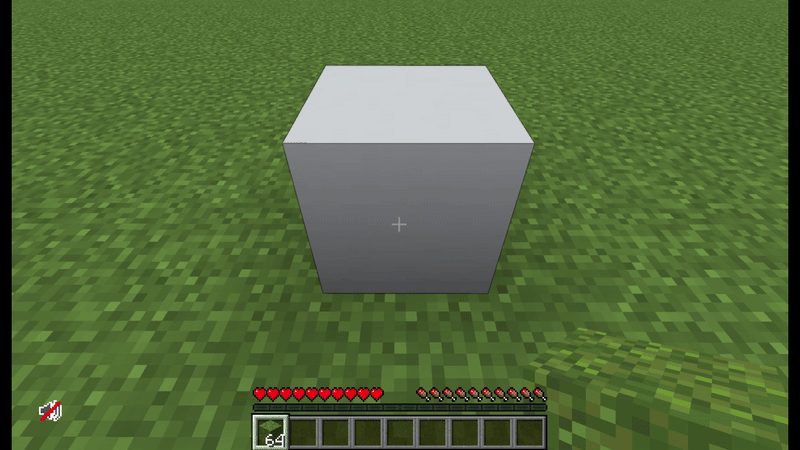
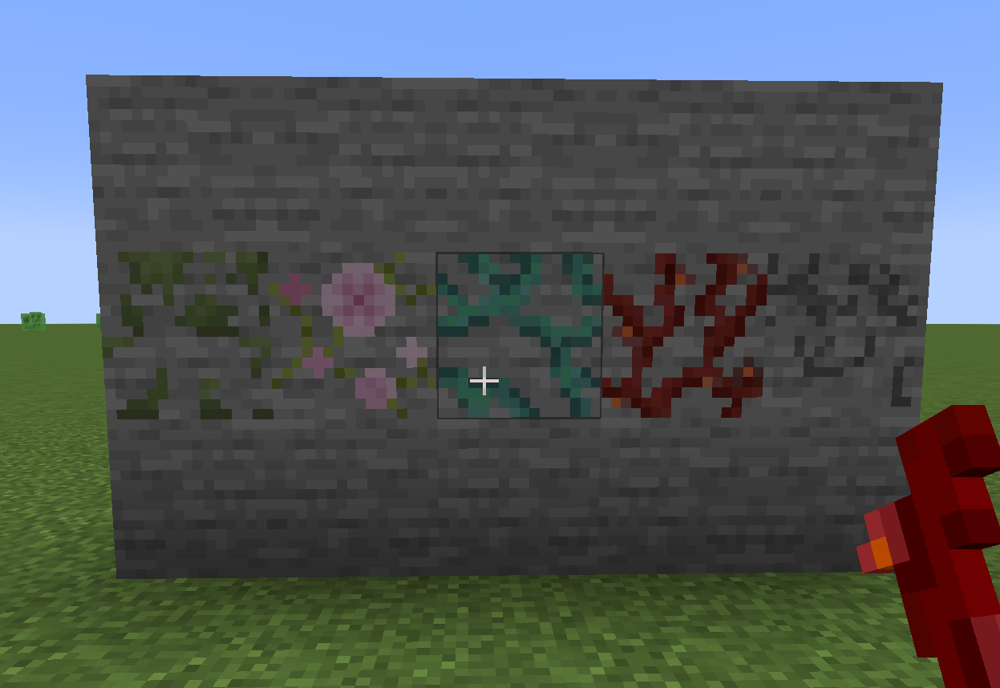
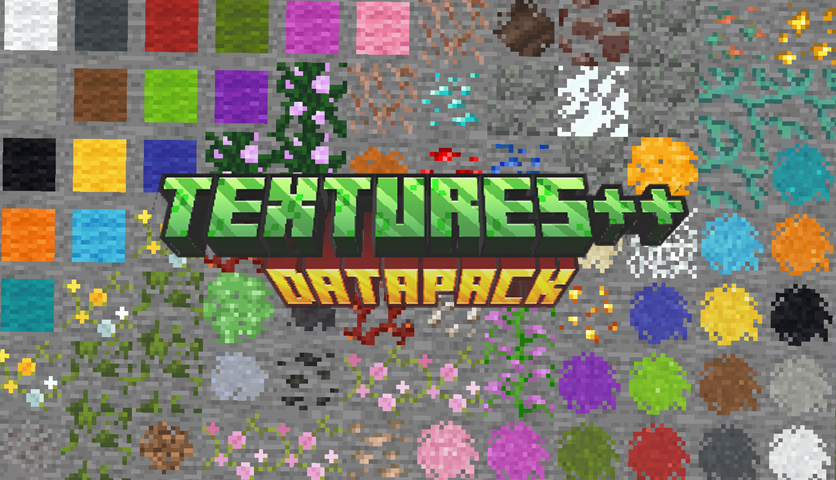

Textures++
A complete overhaul of Minecraft's block variant system adding 20,000 new combinations of textures.
Tech: McFunction, Python, JSON, Aseprite
Highlights



Roles: Engineer, Designer
For me, this project was about fixing inconsistencies between old design decisions and a new design philosophy in a long-standing project. A lot of modders choose to fix this problem by just adding more block variants, but I set out to fill in the gaps in Minecraft's block palette by adding textures that can be applied to any block.
When developing this project, I made the choice to create a datapack rather than a mod--datapacks are the developer's "approved" method for modifying the game and are a lot more accessible to players. This meant working within a system that makes modifying items inconvenient: you can't add data to an item without making it incompatible with other items of the same type. I solved this problem by dynamically adding/removing data from items when the item is being held by the player; I didn't need access to the data in an item unless it was being held anyway.
Takeaway: Adding content to an existing project requires a careful understanding of the codebase and a strong affinity for the developer's vision.